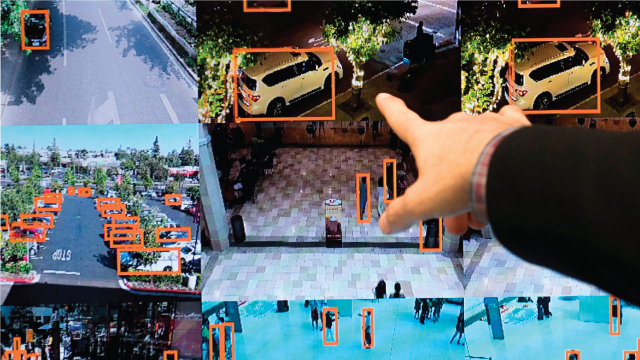
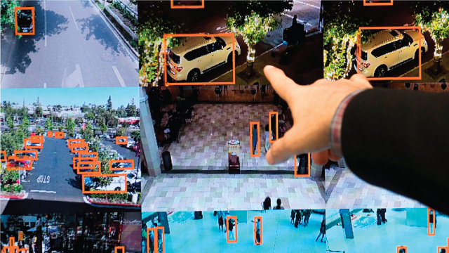

.jpeg) 

The role of artificial Intellegance in changing human life
Digital life is augmenting human capacities and disrupting eons-old human activities.
Code-driven systems have spread to more than half of the world’s inhabitants in ambient information and connectivity,
offering previously unimagined opportunities and unprecedented threats. As emerging algorithm-driven artificial intelligence (AI
continues to spread, will people be better off than they are today?
Some 979 technology pioneers, innovators, developers, business and policy leaders, researchers and activists answered>
this question in a canvassing of experts conducted in the summer of 2018.
The experts predicted networked artificial intelligence will amplify human effectiveness but also threaten human autonomy,
agency and capabilities. They spoke of the wide-ranging possibilities; that computers might match or even exceed human intelligence
and capabilities on tasks such as complex decision-making, reasoning and learning, sophisticated analytics and pattern recognition,
visual acuity, speech recognition and language translation. They said “smart” systems in communities, in vehicles, in buildings and utilities,
on farms and in business processes will save time, money and lives and offer opportunities for individuals to enjoy a more-customized future.
Many focused their optimistic remarks on health care and the many possible applications of AI in diagnosing and treating patients
or helping senior citizens live fuller and healthier lives. They were also enthusiastic about AI’s role in contributing to broad
public-health programs built around massive amounts of data that may be captured in the coming years about everything from personal genomes
to nutrition. Additionally, a number of these experts predicted that AI would abet long-anticipated
changes in formal and informal education systems.
Yet, most experts, regardless of whether they are optimistic or not, expressed concerns about the long-term
impact of these new tools on the essential elements of being human. All respondents in this non-scientific canvassing were asked
to elaborate on why they felt AI would leave people better off or not. Many shared deep worries, and many also suggested pathways
toward solutions. The main themes they sounded about threats and remedies are outlined in the accompanying table.
Specifically, participants were asked to consider the following:
“Please think forward to the year 2030. Analysts expect that people will become even more dependent on networked artificial intelligence
(AI) in complex digital systems. Some say we will continue on the historic arc of augmenting our lives with mostly positive results
as we widely implement these networked tools. Some say our increasing dependence on these AI and related
is likely to lead to widespread difficulties.
Our question: By 2030, do you think it is most likely that advancing AI and related technology systems will enhance human capacities
and empower them? That is, most of the time, will most people be better off than they are today? Or is it most likely
that advancing AI and related technology systems will lessen human autonomy and agency to such an extent that most people
will not be better off than the way things are today?”
Overall, and despite the downsides they fear, 63% of respondents in this canvassing said they are hopeful
that most individuals will be mostly better off in 2030, and 37% said people will not be better off.
A number of the thought leaders who participated in this canvassing said humans’ expanding reliance on technological systems will
only go well if close attention is paid to how these tools, platforms and networks are engineered, distributed and updated.
Some of the powerful, overarching answers included those from:
Sonia Katyal,
“co-director of the Berkeley Center for Law and Technology and a member of the inaugural U.S.
Commerce Department Digital Economy Board of Advisors, predicted, “In 2030, the greatest set of questions will involve how perceptions of AI
and their application will influence the trajectory of civil rights in the future. Questions about privacy, speech,
the right of assembly and technological construction of personhood will all re-emerge in this new AI context,
throwing into question our deepest-held beliefs about equality and opportunity for all.
Who will benefit and who will be disadvantaged in this new world depends on how broadly we analyze these questions today,
for the future.”
.jpeg)